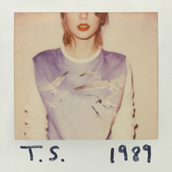
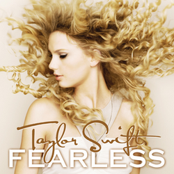

trabalho de revisão
Taylor swift
Taylor Alison Swift é uma cantora, compositora, produtora musical, diretora e empresária americana. Conhecida por suas composições narrativas que geralmente concentram-se em sua vida pessoal, ao qual recebem ampla cobertura midiática. Nascida em West Reading, Pensilvânia, Swift mudou-se para Nashville, Tennessee, aos 14 anos, para seguir uma carreira na música country. No mesmo período, ela assinou contrato com a Sony/ATV Music Publishing e em 2005 com a gravadora Big Machine Records, que lançou seus dois primeiros álbuns, Taylor Swift e Fearless. Esse último, certificado de diamante nos Estados Unidos, foi o primeiro de todos os seus discos seguintes a alcançar o topo da Billboard 200. Seus lançamentos posteriores, Speak Now, Red, 1989 e Reputation venderam — cada um —, mais de um milhão de cópias em suas semanas de estreia em terras estadunidenses, tornando Swift a primeira artista na história a realizar esse feito. Os três últimos citados recalibraram sua imagem do country para a música pop.